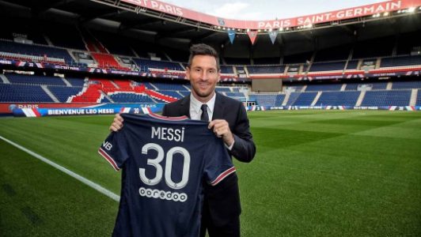
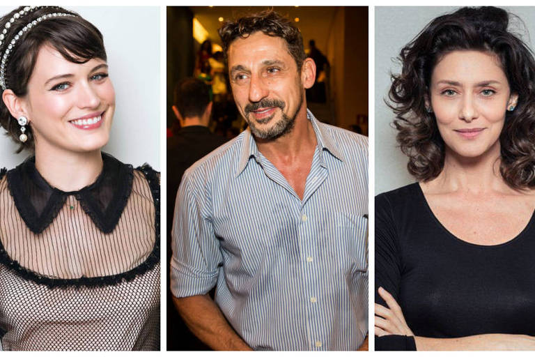

Noticia Futebol
Messi no Psg 07 setembro de 2021

"Se o PSG não ganhar a Champions League agora com Messi, eles não vão mais ganhar", disse. Certamente, o clube francês foi um das equipes que mais se fortaleceu neste mercado de transferêcias Veja mais em
Noticia Famosos
Famosos se dividem entre apoio e crítica a Bolsonaro em dia de protestos 07 setembro de 2021

A atriz Bruna Marquezine, 26 anos, é mais uma dos famosos a aumentar o coro contra o presidente Jair Bolsonaro (sem partido) neste 7 de setembro, dia que em que manifestações de seus apoiadores acontecem em capitais do país.... Veja mais em